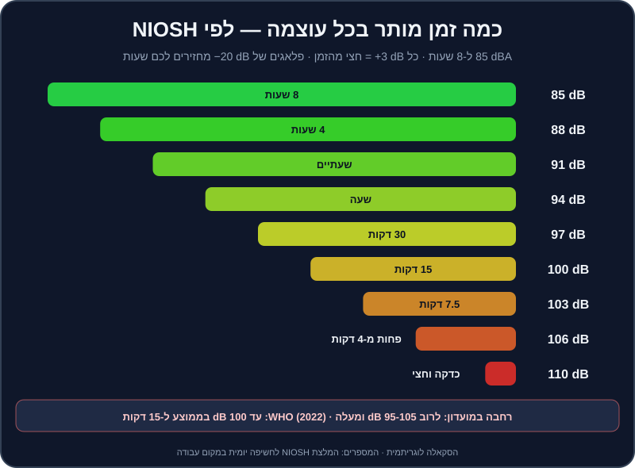

פרק 17 מתוך 20
בריאות האוזניים והופעה
Ear Health & Performance
המספרים של רעש ושמיעה (NIOSH ו-WHO), פלאגים למוזיקאים, ווליום של מוניטור ואוזניות, נימוסי בודקה, נוכחות על הבמה, התמודדות עם לחץ — וצ'קליסט לפתרון תקלות בזמן אמת.
האוזניים הן הכלי היחיד שלכם שאי אפשר לקנות חדש. קונטרולר מחליפים, מחשב משדרגים — אבל תאי השיער באוזן הפנימית לא מתחדשים. נזק לשמיעה מצטבר בשקט, בלי כאב, והוא קבוע. ו-DJs נמצאים בדיוק במקום הכי מסוכן: שעות ליד רמקולים, עם אוזניות צמודות, בחדרים שבנויים להיות רועשים.
החצי השני של הפרק עוסק בהופעה עצמה: איך מתנהגים בבודקה, איך נראים על הבמה, איך מתמודדים עם הלחץ, ומה עושים כשמשהו נשבר באמצע הסט. כי זה יקרה — והשאלה היא רק כמה מהר תחזירו את המוזיקה.
מה תלמדו בפרק#
- מה זה דציבל, ולמה +3 dB זה הרבה יותר ממה שנשמע.
- כמה זמן "מותר" לשמוע בכל עוצמה — לפי NIOSH ו-WHO.
- איזה פלאגים לקנות, וכמה הם מורידים.
- כמה חזק להגדיר מוניטור ואוזניות, ולמה "זחילת ווליום" היא האויב.
- נימוסי בודקה, החלפת DJs, ונוכחות על הבמה.
- איך להתמודד עם פרפרים בבטן.
- צ'קליסט של תקלות נפוצות — ומה עושים בכל אחת.
המספרים#
דציבלים בקצרה#
דציבל (dB) הוא סקאלה לוגריתמית: - עוד 3 dB = פי 2 אנרגיה של צליל. לאוזן זה נשמע "קצת יותר חזק", אבל לנזק — זה פי 2. - עוד 10 dB = נשמע בערך פי 2 חזק יותר, אבל זו פי 10 אנרגיה. - יחידת dBA — מדידה "משוקללת" לפי הרגישות של האוזן האנושית. זו היחידה בהמלצות הבריאות.
כמה זמן מותר?#

המכון האמריקאי לבטיחות ובריאות תעסוקתית (NIOSH) ממליץ על 85 dBA לאורך 8 שעות כגבול יומי, ובכל תוספת של 3 dB — חצי מהזמן:
| עוצמה | זמן חשיפה יומי מומלץ (NIOSH) | דוגמה (משוערת) |
|---|---|---|
| 85 dBA | 8 שעות | רחוב עמוס מאוד |
| 88 dBA | 4 שעות | — |
| 91 dBA | שעתיים | אוזניות בווליום גבוה |
| 94 dBA | שעה | — |
| 97 dBA | 30 דקות | מוניטור חזק בבודקה |
| 100 dBA | 15 דקות | רחבה במועדון |
| 103 dBA | כ-7.5 דקות | — |
| 106 dBA | פחות מ-4 דקות | קרוב לרמקולים |
ארגון הבריאות העולמי (WHO) פרסם ב-2022 תקן גלובלי למקומות בילוי ואירועים עם מוזיקה מוגברת. ההמלצה המרכזית: עד 100 dB בממוצע לאורך 15 דקות (LAeq,15min) — לצד ניטור רמות, אזורים שקטים, ופלאגים זמינים לקהל. לשמיעה אישית (אוזניות), WHO ממליץ למבוגרים על חשיפה שבועית של עד כ-80 dB לאורך 40 שעות.
שימו לב לחשבון: סט של 4 שעות במועדון שבו העוצמה בבודקה היא 100 dB = פי 16 מהמנה היומית המומלצת. בלי הגנה.
פלאגים — הכלי הכי חשוב בתיק#
| סוג | כמה מוריד | צליל | מחיר משוער בישראל | למי |
|---|---|---|---|---|
| ספוג חד-פעמי | הרבה (מדורג לרוב ב-25-33 dB) | עמום מאוד — "מתחת לשמיכה" | שקלים בודדים לזוג | גיבוי, נסיעות, הופעות של אחרים |
| פלאגים מוזיקליים אוניברסליים (עם פילטר) | בערך 15-25 dB, יחסית "שטוח" | טבעי יחסית — שומעים את המיקס | כ-60-250 ₪ | כל DJ, מהיום הראשון |
| פלאגים מותאמים אישית (יציקה) עם פילטר | לפי פילטר — בדרך כלל 9, 15 או 25 dB | הכי טבעי ונוח לשעות | כ-600-1,500 ₪ | מי שמופיע באופן קבוע |
מה זה "שטוח"? פלאג ספוג מוריד הרבה גבוהים ומעט נמוכים — לכן הכול נשמע עמום, וה-DJ מסובב את ה-High למעלה. פלאג מוזיקלי מנסה להוריד את כל התדרים באופן שווה — המיקס נשמע אותו דבר, רק שקט יותר.
על הדירוגים: NRR (אמריקאי) ו-SNR (אירופאי) הם דירוגי מעבדה. בפועל, ההגנה תלויה בכמה טוב הפלאג יושב. תרגלו להכניס אותם נכון.
איך מנגנים עם פלאגים#
- מתחילים בבית — תרגלו עם פלאגים כדי שהאוזן תתרגל.
- שתי האוזניים, כל הזמן. לא "פלאג אחד ואוזן אחת לאוזניות".
- אוזניות מעל הפלאגים — לקיואינג. תצטרכו קצת יותר ווליום באוזניות, אבל הרבה פחות ממה שאתם חושבים.
- תסמכו על המטרים, לא על התחושה שהכול "שקט מדי".
- אל תוציאו אותם "רק לרגע" כדי לבדוק את המיקס — העדיפו להסתובב לרחבה ולהקשיב משם עם הפלאגים.
מוניטור, אוזניות וזחילת ווליום#
מוניטור (Booth Monitor)#
המוניטור קיים כדי שתשמעו את מה שמתנגן בזמן אמת, בלי ההשהיה של הצליל שחוזר מהאולם. הוא לא אמור להיות חזק יותר מהרחבה.
- ווליום: מספיק כדי לשמוע את הקיק בבירור — לא יותר.
- כיוון: המוניטור מכוון אליכם, בגובה הראש אם אפשר.
- ערוץ נפרד: ב-Rekordbox ובקונטרולרים רבים יש יציאת
Boothנפרדת עם ידית ווליום משלה. השתמשו בה ולא ב-Master.
אוזניות#
- ווליום נמוך ככל האפשר. אם אתם צריכים להגביר — זה סימן שהמוניטור חזק מדי, או שהאוזניות לא אוטמות.
- טכניקת אוזן אחת — החליפו מדי פעם את האוזן שמקשיבה.
- הורידו את האוזניות כשאתם לא צריכים לשמוע את הדק הבא.
זחילת ווליום#
לאורך ערב, האוזן מתעייפת והמוח "מבקש" עוד. ה-DJ מעלה ווליום, ואז עוד קצת, ובסוף הערב המטרים באדום והמוזיקה מעוותת. הסימנים: אתם מסובבים את ה-High למעלה (האוזן מאבדת קודם את הגבוהים), והרחבה מתחילה לצאת החוצה לדבר.
התיקון: קבעו "תקרה" בתחילת הערב יחד עם איש הסאונד, והסתכלו על המטרים — לא על התחושה.
אחרי ההופעה#
- שקט — תנו לאוזניים כמה שעות של שקט. בלי אוזניות בדרך הביתה.
- אל תתרגלו למחרת בווליום גבוה.
- בדיקת שמיעה פעם בשנה-שנתיים, כדי שתהיה לכם נקודת השוואה.
נימוסי בודקה#
הבודקה היא מקום עבודה משותף. דברים שכל DJ מנוסה מצפה מכם:
- הגיעו מוקדם. לפחות 30 דקות לפני הסט. תגידו שלום לאיש הסאונד ולמי שמנגן לפניכם.
- אל תיגעו בציוד של מי שמנגן, ואל תשנו הגדרות במיקסר בזמן הסט שלו. שאלו לפני שאתם מחברים משהו.
- תאמו את ההחלפה מראש: מי מנגן את הטראק האחרון? באיזה ערוץ אתם מתחברים? האם הוא ייתן לכם לעשות את המעבר?
- לעולם אל תעצרו את המוזיקה. החלפת DJ צריכה להיות מעבר, לא שקט.
- שתייה רחוק מהציוד. כוס הפוכה על מיקסר היא סוף הערב (ולפעמים סוף המיקסר).
- אם אתם בחימום — אל תנגנו את הלהיטים הגדולים ואל תעלו לאנרגיה של שיא. אל "תגנבו" למי שבא אחריכם.
- השאירו מקום מסודר — כבלים, USB, אוזניות. אל תשאירו את ה-USB שלכם בנגן.
- כבדו את איש הסאונד. אם הוא מבקש להוריד ווליום — מורידים. הוא שומר על המערכת, על המקום ועל האוזניים של כולם.
- בק-טו-בק (B2B) — שני DJs לסירוגין: — תקשורת לפני: כמה טראקים כל אחד, ומה הכיוון.
מה להביא בתיק#
אוזניות (וגם מתאם 6.35 מ"מ ↔ 3.5 מ"מ), פלאגים, שני USB עם ספרייה מיוצאת, מחשב ומטען, קונטרולר וכבל USB (ועוד אחד רזרבי), מפצל חשמל, פנס קטן, בקבוק מים.
נוכחות על הבמה#
הקהל לא רק שומע אתכם — הוא גם רואה אתכם.
- הרימו את הראש. המטרה: לפחות חצי מהזמן מסתכלים על הרחבה, לא על המסך. זה קשה בהתחלה — וזו בדיוק הסיבה להכין Hot Cues ופלייליסטים מראש.
- זוזו עם המוזיקה. אתם לא צריכים לרקוד כמו בקליפ, אבל DJ קפוא מעביר אנרגיה קפואה.
- חייכו. כשאתם נהנים — רואים את זה.
- מגע עין עם אנשים ברחבה, הנהון, ידיים למעלה בדרופ גדול — במידה.
- לבוש מתאים — חולצה מכופתרת בחתונה, משהו שמתאים לסצנה במועדון. שאלו את המזמין.
- הטלפון בכיס. לא מסמסים באמצע סט.
פרפרים בבטן#
כולם מתרגשים — גם DJs שמופיעים כבר 20 שנה. ההבדל הוא שהם יודעים מה לעשות עם זה.
- הכנה מורידה לחץ. שלושת הטראקים הראשונים מתוכננים, הפלייליסט מסודר, ה-Hot Cues מוכנים. כשהידיים יודעות מה לעשות, הראש נרגע.
- הגיעו מוקדם ובדקו הכול: חיבורים, סאונד, מוניטור. הפתעות טכניות הן מקור הלחץ הכי גדול.
- נשימת קופסה — 4 שניות שאיפה, 4 עצירה, 4 נשיפה, 4 עצירה. שלוש-ארבע פעמים לפני שעולים.
- הטראק הראשון — "בטוח". טראק שאתם מכירים בעל-פה, עם אינטרו ארוך ונוח.
- טעות היא לא סוף העולם. רוב הקהל בכלל לא שם לב לטעויות שאתם שומעים. מתקנים (Echo Out הוא חבר), ממשיכים, ומחייכים.
- "התרגלו להופיע" — נגנו מול חברים, בבית, בלייב ברשתות. כל הופעה קטנה הופכת את הבאה לקלה יותר.
צ'קליסט תקלות בזמן אמת#
התקלה הכי נפוצה היא "אין סאונד" — והסיבה הכי נפוצה היא פיידר או כפתור. לכו לפי הסדר, מהמקור אל הרמקול:
| תקלה | בדקו לפי הסדר | פתרון מהיר |
|---|---|---|
| אין סאונד ברחבה | 1. הטראק מתנגן? 2. פיידר הערוץ למעלה? 3. הקרוספיידר בצד הנכון? 4. Trim/Gain? 5. Master? 6. כבלים מהקונטרולר/מיקסר למערכת? 7. הרמקולים דולקים, בכניסה הנכונה? 8. הגדרות האודיו ב-Rekordbox (התקן הפלט)? | טראק חירום מהטלפון לערוץ פנוי, ובינתיים — לפי הרשימה |
| אין סאונד באוזניות | כפתורי CUE של הערוץ, ידית ווליום האוזניות, ידית Cue/Master Mix, השקע מחובר עד הסוף, מתאם |
אוזניות רזרביות |
| המחשב קפא / Rekordbox קרס | — | 1. טראק חירום מהטלפון/טאבלט. 2. הפעלה מחדש של Rekordbox. 3. אם יש CDJ — USB גיבוי |
| עיוות / "רעש" בצליל | מטרים באדום? Gain גבוה? EQ מוגבר? | הורידו Master ו-Trim, והחזירו EQ למרכז |
| קפיצות / גמגומים בסאונד | מעבד עמוס? תוכנות פתוחות? כבל USB רופף? | סגרו תוכנות, הגדילו Buffer Size בהגדרות האודיו, החליפו כבל או שקע USB |
שריקה במיקרופון (feedback) |
המיקרופון מול רמקול? Gain של המיקרופון גבוה? | התרחקו מהרמקול, הנמיכו את המיקרופון |
| הקונטרולר לא מזוהה | כבל, שקע, מתאם, האם Rekordbox פתוח בגרסה שתומכת בו | חיבור מחדש, שקע אחר, הפעלה מחדש של התוכנה |
| הגריד/הסנכרון "בורחים" | הגריד של הטראק שגוי? | כבו Sync, ותעשו ביטמאץ' באוזן — בשביל זה תרגלתם |
| הטראק הלא נכון התחיל | — | Echo Out מהיר, או קאט לטראק הנכון על ה-1 |
| הפסקת חשמל | — | אל-פסק למחשב ולקונטרולר; התחלה מחדש רגועה עם טראק בטוח |
תרגילים#
סיכום#
- הכלל: 85 dBA ל-8 שעות, וכל +3 dB חוצה את הזמן. ב-100 dB — רבע שעה. WHO: עד 100 dB בממוצע ל-15 דקות במקומות בילוי.
- פלאגים מוזיקליים (15-25 dB) — מהיום הראשון, בשתי האוזניים. ותרגלו איתם בבית.
- מוניטור ואוזניות — כמה שפחות. זחילת ווליום היא האויב; המטרים הם החבר.
- בודקה: מגיעים מוקדם, לא נוגעים, מתאמים החלפה, ולעולם לא עוצרים את המוזיקה.
- ראש למעלה, חיוך, ותזוזה עם המוזיקה.
- תקלות: לכו מהמקור לרמקול, ותמיד — טראק חירום מוכן.
בפרק הבא — איך הופכים את כל זה לעבודה: הופעות ראשונות, קיט פרומו, רשתות חברתיות בישראל, ותמחור. ← פרק 18: קריירה והופעות